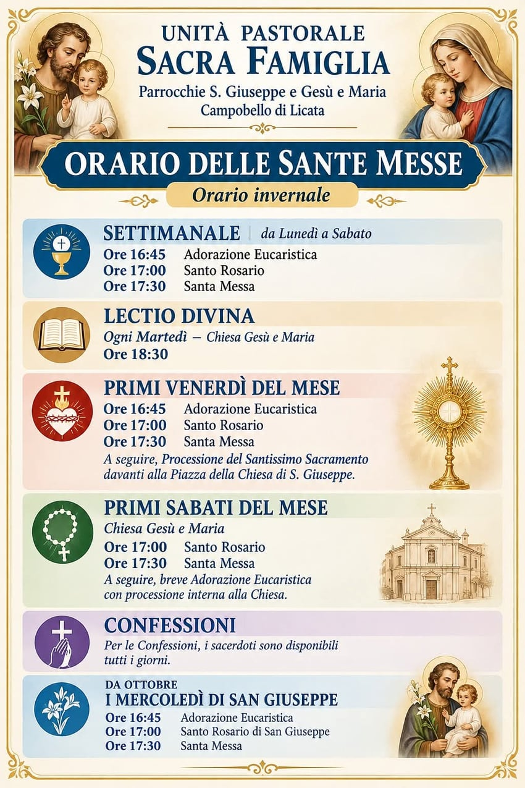

Gli orari delle celebrazioni nelle due chiese e le informazioni per ricevere i sacramenti.
The times of the celebrations in the two churches and how to receive the sacraments.
La preghiera scandisce la settimana nelle chiese di Gesù e Maria e San Giuseppe.
Prayer marks the week in the churches of Gesù e Maria and San Giuseppe.

Segni efficaci della grazia, istituiti da Cristo e affidati alla Chiesa, che accompagnano ogni tappa della vita cristiana.
Effective signs of grace, instituted by Christ and entrusted to the Church, accompanying every stage of Christian life.
Porta d'ingresso alla vita cristiana: libera dal peccato originale e fa rinascere come figli di Dio. Per il Battesimo dei bambini si concorda un incontro con i genitori e i padrini.
The gateway to Christian life: it frees from original sin and gives new birth as children of God. For infant Baptism a meeting is arranged with the parents and godparents.
Il sacramento del perdono, nel quale si fa esperienza della misericordia di Dio. I sacerdoti sono disponibili prima delle celebrazioni e su richiesta.
The sacrament of forgiveness, in which we experience the mercy of God. Priests are available before celebrations and on request.
Fonte e culmine della vita cristiana: il pane e il vino divengono Corpo e Sangue di Cristo. I bambini vi si preparano attraverso il cammino di catechesi.
Source and summit of Christian life: bread and wine become the Body and Blood of Christ. Children prepare through the catechesis journey.
Il dono dello Spirito Santo che rafforza la fede e rende testimoni di Cristo. Si riceve al termine di un apposito percorso di preparazione.
The gift of the Holy Spirit that strengthens faith and makes us witnesses of Christ. It is received at the end of a dedicated preparation path.
L'alleanza d'amore tra un uomo e una donna, benedetta da Dio e resa segno del suo amore. È previsto un corso di preparazione da concordare con i sacerdoti.
The covenant of love between a man and a woman, blessed by God and made a sign of his love. A preparation course is arranged with the priests.
Il sacramento che consacra al ministero di diaconi, sacerdoti e vescovi, al servizio del popolo di Dio.
The sacrament that consecrates to the ministry of deacons, priests and bishops, in service to the people of God.
Il conforto della grazia di Dio nella malattia e nella fragilità. Per gli ammalati a casa è possibile richiedere la visita del sacerdote.
The comfort of God's grace in illness and frailty. For the sick at home, a visit from the priest can be requested.
Per informazioni e per avviare la preparazione, scrivi alla parrocchia o parla con i sacerdoti al termine delle celebrazioni.
For information and to begin preparation, write to the parish or speak with the priests after the celebrations.
sacrafamiglia.campobello@diocesiag.it